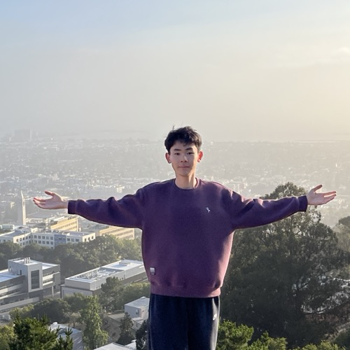

Xu Li 李旭
Agent safety · Human-AI coevolution
Hi! I recently graduated from Northeastern University in Boston, MA, and will be joining Chats Lab as a PhD student in Fall 2026 under the supervision of Prof. Weiyan Shi. I'm currently an intern at VirtueAI.
I'm particularly interested in agent safety and human-AI coevolution — understanding how tool-using agents fail, and how people and AI systems shape each other over time.

🎉 Unsafer in Many Turns has been accepted to ICML 2026, and selected as a Spotlight at the AI4GOOD Workshop @ ICML 2026!
News
2026.04
Unsafer in Many Turns: Benchmarking and Defending Multi-Turn Safety Risks in Tool-Using Agents
2025.09
ICCV 2025 6th CLVISION Workshop Challenge
[link]
2025.05
MM-Prompt: Cross-Modal Prompt Tuning for Continual Visual Question Answering
arXiv 2025 [pdf]
Contact
Email: li.xu2@northeastern.edu